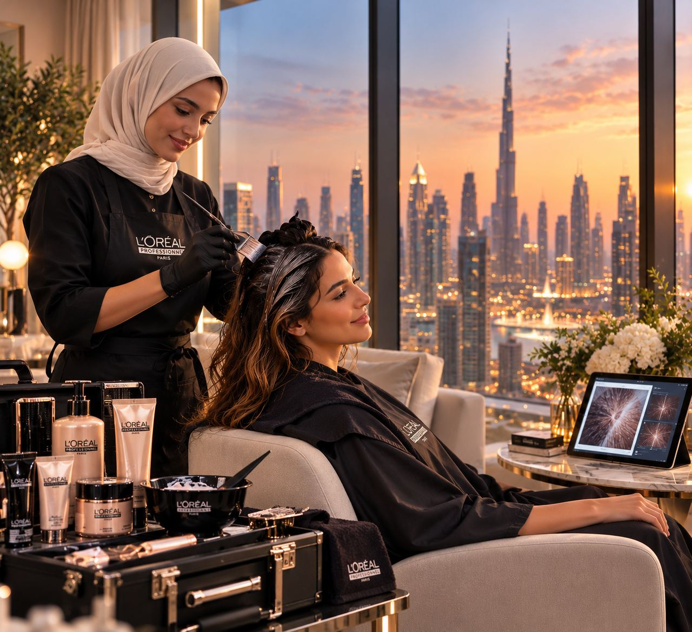
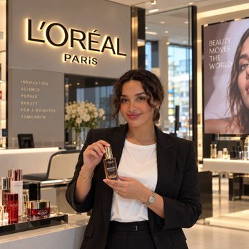
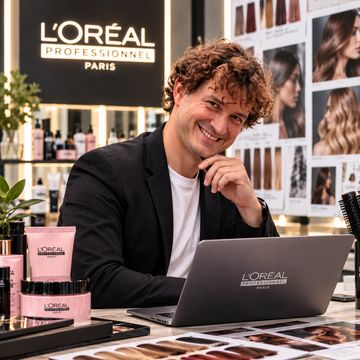
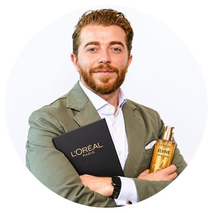
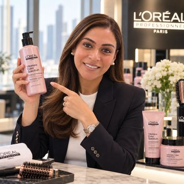
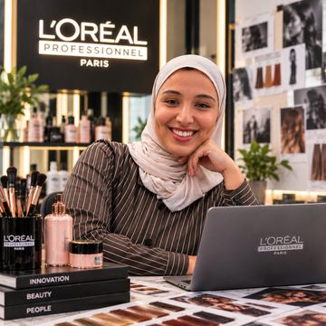
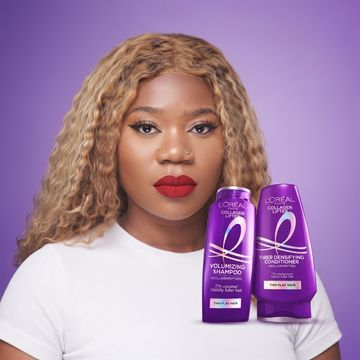

Approve €50m for innovation in 2027.
The budget funds nine initiatives. The largest is PRO•GO: certified professionals from partner salons treat customers at home, and customers then subscribe to their products. PRO•GO starts as a pilot in Dubai with €3m. A further €7m is released only if the pilot meets its targets in Q4 2027.
0.11% of 2025 sales. The Research & Innovation budget is unchanged.
L'Oréal 2025 results; Team D proposal€7m held until the Q4 2027 review.
Team D proposalReleased in stages, each after a review.
Team D proposalActive subscribers by Q4 2027.
Team D targetWhy now
We would test PRO•GO in Dubai. Our salon business is growing fast, Dubai sits in our fastest-growing region, and its premium homes are close together, so one professional can serve many customers.
Testing the model now costs €3m. That is the right size for an unproven idea.
The concept
Professional hair and skin care at home, guided by AI and paid by subscription. Partner salons do every visit and share the revenue.

The year is 2035. In Dubai, more and more care happens at home: partner salons send their certified professionals to the customer, and care now covers health as well as looks.
How might L'Oréal turn one-off beauty purchases into AI-guided care subscriptions, delivered at home by its certified professionals and partner salons, by 2035, so that it earns recurring revenue and owns the long-term customer relationship?
On WhatsApp in the pilot. In the PRO•GO app from 2028.
A phone scan built on Beauty Genius.
A certified professional from a partner salon visits.
The customer uses the professional products at home.
Products every 30–60 days. The salon earns a commission.
The AI flags when the next visit is due.
PRO•GO supports Professional Products. It brings salons new customers and pays them on every visit and reorder.
Budget: €50m across nine initiatives
Three horizons: H1 improves today's business, H2 opens new customers and channels, H3 builds new business models. Half the money goes to H1.
| Initiative · click for details | Link to M1 scenario | 2027 | Review target |
|---|
Check: . We lean towards new growth instead of the usual 70/20/10 split, because the €1.38bn Research & Innovation (R&I) budget, not included here, already funds formulas, ingredients, biotech and devices. From 2028: if PRO•GO passes its gate, the innovation budget grows to fund it; H1 tools move into division budgets, as in the roadmap.
Team D proposal; L'Oréal 2025 Universal Registration Document (R&I)Risk and reward
The largest amounts sit in the safe bets. The big bets get small amounts, released in stages. Bubble size is the 2027 budget.
- H1 · Core
- H2 · Adjacent
- H3 · New
- Point at a bubble for details
How we ranked them
Team D scored each initiative from 0 to 10 on five criteria. PRO•GO ranks first even when fit with our scenario counts for nothing.
Parked, 6 of 15 ideas: refill packs, AI-personalised bundles, corporate beauty days, pharmacy and dermatologist referrals, dermatology clinic partnerships, AI beauty coach. Each was close to today's business, covered by another initiative, or too early.
Stop rule. An initiative that misses its targets at two reviews in a row is stopped. Its money goes to the next in line. Each year 15% of the H2 and H3 budget is held back for initiatives that meet their targets.
Timeline and funding
PRO•GO is funded in stages. You decide at each review whether the next stage goes ahead.
- H1 · Core
- H2 · PRO•GO
- H3 · New
- Your decision
| Your decision | PRO•GO passes if | Then released |
|---|
Governance
An ambidextrous set-up: the divisions run the core, a small venture unit builds PRO•GO, and Research & Innovation explores the new. You sponsor it and take the funding decisions.
Innovation Board, quarterly: Deputy CEO for Research, Innovation and Technology (chair), CFO, President of Professional Products. The President presents PRO•GO results but does not vote on PRO•GO, because the unit sits in that division.
The divisions
Professional Products and L'Oréal Paris run these upgrades within their normal plans. Beauty Genius tracking: Beauty Tech team. Salon toolkit and one-tap reorder: Professional Products.
PRO•GO venture unit
A small team inside Professional Products, which owns the salon relationships. Its own targets, and its own profit and loss account from 2028. Its budget is ring-fenced and the CEO is its sponsor, so the core business cannot cut it to protect short-term targets. It borrows Beauty Tech for the app and Beauty Passport.
Research & Innovation and BOLD
Research & Innovation leads the science: longevity care, Beauty Passport, home scanner. BOLD, L'Oréal's venture fund, manages partners such as Timeline and Galderma.
Reference companies
Peers spend 2–4% of sales on research and development (R&D), mostly on products and science. None of them funds a professional care service.
| Company | Period | Revenue | R&D | R&D % of sales | Where the money goes |
|---|
Millions, in each company's reporting currency. R&D % is our calculation from reported figures; sources on the last page. Benchmark: Strategy& / PwC Global Innovation 1000, consumer companies 2–4%.
What we take from them. L'Oréal already leads on product science, so we keep its Research & Innovation budget as it is. We add €50m (0.11% of sales) for the one thing no peer is building: a professional care service with recurring revenue.
Decisions requested
- Approve the €50m innovation budget for 2027: €25m core, €15m adjacent, €10m new.
- Create the PRO•GO venture unit inside Professional Products, with a ring-fenced budget. Start the Dubai pilot in Q2 2027 with €3m.
- Set up a quarterly Innovation Board, chaired by the Deputy CEO for Research, Innovation and Technology, with one scorecard and the stop rule. You sponsor it and take every continue, stop or scale decision.
- Hold the Q4 2027 review with us: continue or stop PRO•GO, and decide on the remaining €7m.
Next decision: Q4 2027 pilot review. Repeat bookings and margin per visit decide whether the remaining €7m is released.

Amjad Saad BensalamahChief Innovation Officer
Ariel De SilvioChief Technology & AI Officer
Ignacio Montero AlcantaraChief Financial Officer
Rebecca FernandesChief Marketing & Creative Officer
Saja AlOwayshiqChief Customer Experience Officer
Qhakazile MathebulaChief Operations OfficerSources
- L'Oréal 2025 results, CFO presentation, Feb 2026 (sales €44.05bn)
- L'Oréal 2025 Universal Registration Document (R&I €1,380m; SAPMENA–SSA +10.9% like-for-like)
- L'Oréal 2026 half-year results, 29 July 2026 (Professional Products +12.6% like-for-like, unadjusted)
- L'Oréal Paris USA, Beauty Genius page (1.2m+ US conversations, company figure, accessed Oct 2026)
- Morgan International Realty, Dubai Branded Residences Report H1 2026, as reported by Reuters, Oct 2026 (64,744 units, 183 developments)
- Unilever, Innovation and R&D · Unilever FY2025 results
- Estée Lauder Form 10-K FY2025
- Beiersdorf Annual Report 2025
- Benchmark: Strategy& / PwC Global Innovation 1000 (consumer 2–4%)
Student project for IE Business School, not affiliated with or endorsed by L'Oréal. Budgets, scores and targets for 2027 to 2035 are Team D's proposal, not L'Oréal figures.
This page was built with the help of generative AI (Claude). Figures are being checked against the sources listed.